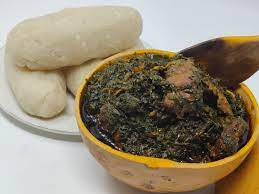

Eru

Description
Water fufu ( fermented cassava squeezed) & Eru is a Cameroonian dish that originated from the South West region of Cameroon.
However, due to its richness in food class and good taste, Eru is loved all over Cameroon by both the French and English persons.
Ingredients
- Sliced Eru leaves
- Water leaf
- Canda meat
- Beef meat
- Dry fish (mbunga)
- Palm oil (“read oil”)
- Maggi, salt, crayfish, pepper.
- Bought water fufu
Steps
- Wash beef and Canda thoroughly, arrange the dry fish
- Pick and slice water leaf.
- Wash arranged water leaf aside, wash the bought Eru as well.
- Put meat in the pot with sufficient water, add maggi, salt.
- After it boils for some time, add washed canda
- When they are ready, add the washed water leaf.
- Allow water leaf to get very ready (soft) then add the Eru.
- Let the Eru get ready, add cray fish, dry fish, oil, maggi, salt for more taste.
- Allow it this time around to actually get ready well, blend with the ingredients while you are mixing.
- Pour the water fufu in an empty pot, be grinding while adding water to soften.
- When sufficiently soft, place the pot on fire.
- Keep turning till it gets ready.
- Make it in bundles and serve Water fufu and Eru all hot for consumption.